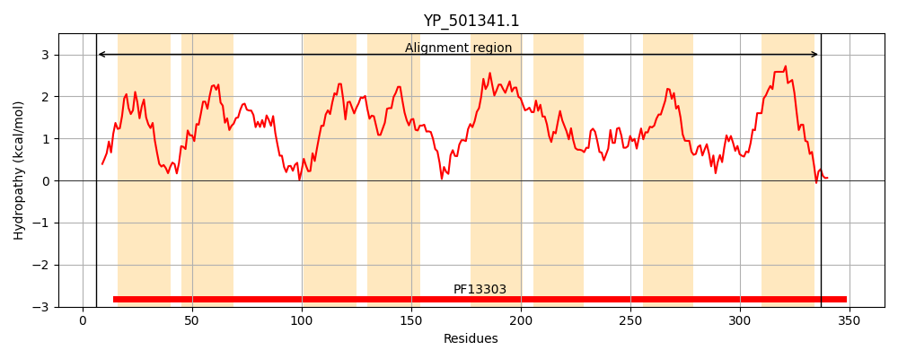
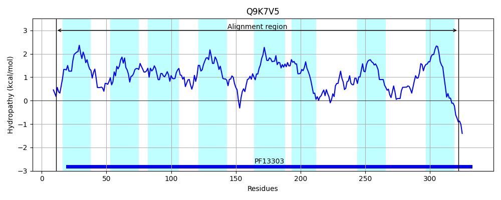
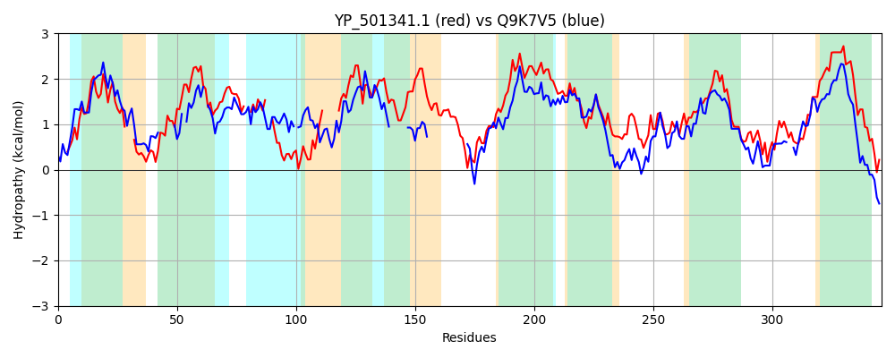

Hit Accession: Q9K7V5
Hit TCID: 9.A.23.1.1
Hit Description: gnl|BL_ORD_ID|18334 gnl|TC-DB|Q9K7V5|9.A.23.1.1 BH3254 protein OS=Bacillus halodurans GN=BH3254 PE=4 SV=1
Mach Len: 346
e:0.000000
Query TMS Count : 8
Hit TMS Count: 8
TMS-Overlap Score: 4.700000
Predicted Substrates:CHEBI:7556;nicotinamide, CHEBI:7559;nicotinic acid
BLAST Alignment:
Score: 217 , Bit scores: 88 bits, E-value: 1.0e-19, Alignment length: 346, Percentage identity: 24
Query: 6 TITPKDFIFRVLSGVAIGIVAGLVPNAIL---GEIFKYFMDYHPIFKTLLGVVVAIQFTVPALIGALVAMKFDLSPLAI--AVVASAA--YVGSGAAQFKNGAWMITGIGDL------INTMITAAIAVLFILLIQHRVGSMALIVFPTVVGGISGAIGVLILPYTKMITTAIGNMVNGFTELQPIVMSILISMVFSLIIISPLSTVAIAFAIGITGLAAGSASIGISATEAVLIIGTSKVNRLGVPLSVFFGGVKMMIPNMVKYPILML-PILTTAIVSGLVSALVGIHGTKESAGFGFIGMVGPINAFKFMEVDSAWLSVLLIVVAFFVVPFVTAWLADIIYRK 337
+++ K + LS +A+G+ + L+ I+ G++ ++ + ++ +GV+ A+ PA IG VA L + A++A AA +G A F A + T +G + I+ ++T + V+ L +G P + G+SG +G + TE +PI+M I+++ + L + +P+S+ A+A + ++G+AAG+A++G +A + + + N S+ G + +PN+VK P+++L P + A+++ L + + + + AG G G+VG I F ++ + VL I++ F+ P + + +RK
Sbjct: 11 SLSLKTYFVTALSFMALGLFSSLIIGLIIRTIGDVTQFELMHN------IGVL-AMSLMGPA-IGVAVAYGLQAPRLVLFSALIAGAAGAELGGPAGSFV-AALLATEVGKVVAGETKIDIIVTPFVTVIVGFLTAQFIG-------PVIQSGMSG----------------LGATIMWATEQRPIIMGIVVATLMGLALTAPISSAALAIMLELSGIAAGAATVGCAAQMVGFAVSSYRENGWAGIFSLGIGTSMLQVPNIVKNPLIILPPTIAGAVLAPLATTVFLMTNNEAGAGMGTSGLVGQI--MTFTDMGFSGNVVLAILLLHFIGPALISLSLSEWFRK 322 | Protein Hydropathy Plots: |
|---|
|  |  |
Pairwise Alignment-Hydropathy Plot:
|
|---|
|  |